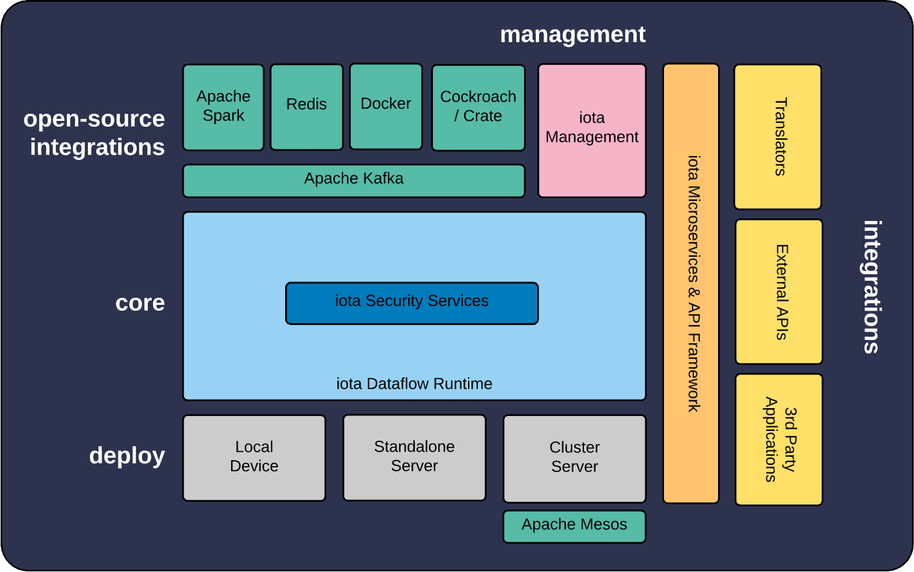

Architecture of iota
The iota core provides highly distributed and fault tolerant IoT point aggregation, security, managed data pipeline and orchestration capabilities:
Architecture Components
Core
iota is built to ingest, analyze and orchestrate IoT data points in a highly distrubuted and performant fashion.
API's
iota's API's include access to the event processing and actions engine, as well as point value queries and interactions.
Microservices
Developers can create their own microservices that run on iota. A selection is included by default: encrypt, translate modules and more.
Management
iota laptop and server editions (both standalone and cluster) include a web management front end that utilizes Django.
3rd Party Integrations
iota utilizes some of the world's finest open-source components, including: Spark, Redis, CockroachDB, Kafka and more.
Deploy
Deploy iota directly in your device (ARM,) on your laptop (Mac or PC,) or via server(s) (Intel; standalone and cluster editions.)
Cups of Coffee
Contributors
Microservices
Lines of Code